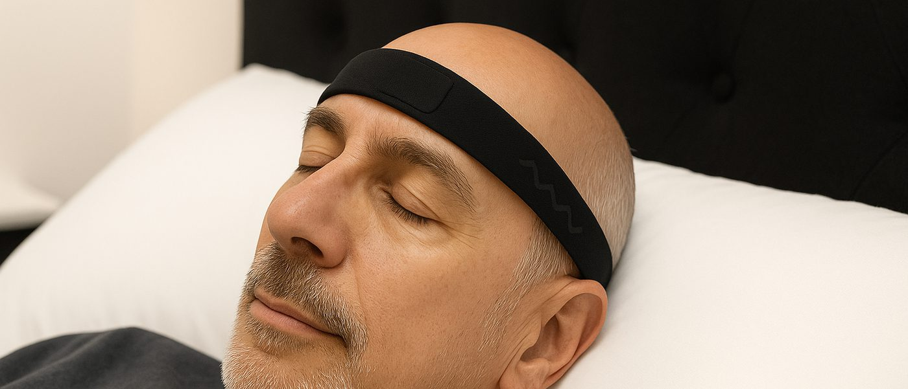

Objective physiology for incretin programmes · Copenhagen
Objective sleep and muscle measurement, at home
Incretins already change how patients sleep. Nothing in the programme measures it.
Weight loss reduces sleep-disordered breathing, and the first drug ever approved for obstructive sleep apnoea was an incretin.1 It won on an objective endpoint, measured in a sleep lab. We measure the same physiology at home, over far more nights, and hand back endpoints a reviewer can audit.
What we measure
Overnight EEG at home · forearm EMG in daily life
Where it lands
Digital Science · Clinical Development · Partnering
Status
EU-resident · research use only
01
A benefit nobody is recording.
Three numbers, none of them about efficacy. Together they describe what an incretin programme cannot currently see.
Undiagnosed
They are already in your trials
Sleep apnoea is common in the population incretins treat, and most of it has never been identified. The patient does not know, and neither does the sponsor.
80%
of obstructive sleep apnoea is undiagnosed2
The instrument gap
Glucose got a sensor. Sleep did not.
Where sensors do appear in trials, they are overwhelmingly glucose monitors. Sleep is captured with actigraphy or not at all, and actigraphy cannot stage sleep or see an arousal.
25%
of 48 sensor-instrumented trials captured sleep or activity3
Stay-time
Half are gone inside a year
Every month a patient stays on therapy is a month of revenue. Nobody can see who is drifting, or why, until the refill stops coming.
52%
stopped semaglutide within 12 months 77,310 adults without diabetes4
Semaglutide discontinuation in 77,310 adults without diabetes, by quarter.4 The band above is completion inside the pivotal trials, a different measure, and the distance between the two is the point. US persistence has improved sharply for recent starters, from a third of 2021 initiators to three in five of those starting in 2024.5 The shape of the curve did not change.
Why sleep, from first principles
1
Incretins change sleep.
Weight loss reduces sleep-disordered breathing. The effect is large enough that it carried a drug to the first approval ever granted for obstructive sleep apnoea.1
2
Most of that change is invisible.
Four in five cases of sleep apnoea have never been diagnosed.2 If a patient's sleep improves, nothing records it. If it gets worse, nobody finds out.
3
So the benefit goes unclaimed.
The improvement happens anyway. But a patient cannot count a benefit nobody showed them, and a payer will not pay for an outcome nobody measured.
And one open question
Does the way a patient sleeps in month three tell you whether they are still on therapy in month nine? Nobody has tested it. Sleep disruption tracks with non-adherence in other chronic therapies. That check has never been run here. We are calling it a hypothesis because that is what it is. Answering it takes twenty patients, not a programme.
There is a lot of support around the drug. None of it measures physiology.
These programmes matter, and one of them is already your partner. We are not another one of them. We measure underneath whichever one you use.
Sleep physiology, night after nightMuscle function during ordinary movement
Increase stay-time: ensure patients remain on treatment and in control.Clinically validated physiologic data signals.Novo Nordisk · two of the stated digital partnering priorities
02
We provide the signals.
Two things incretin therapy changes: sleep at night, and muscle in ordinary movement. Both measured at home, between clinic visits.

Recorded at home, between clinic visits.
Nexus headbandOvernight EEG at home. Six dry electrodes, 250 Hz, no gel.
Paragit SleeveForearm EMG and motion. Muscle function during real activity.
One night in the portal · staging, architecture, fragmentation, signal quality, provenance behind every figure
Continuous, not episodic
A reading every night through months three to nine, which is when most people stop. There is no appointment and nothing for the patient to remember.
Graded before you ask
Each recording passes a cascade of independent scorers and quality gates. Method, version and trust grade travel with every number, auditable back to the epoch it came from.
Built for a sponsor
Study-scoped researcher access, de-identified by default. CSV and data-dictionary export, full audit trail, EU throughout.
EU-resident storage & computeIEC 62304 Class A, documenting to BFor research use only
03
Which measures would survive a regulator.
An endpoint is only worth adding to a protocol if it holds up under review. We sorted thirty-eight of ours into three piles, and you get the sorting up front, including the pile we would rather not show you.
Key · use today
7
Reliable across repeat nights, replicated elsewhere, valid on the montage we record. These are the ones to put in a protocol.
Exploratory. It says so on the marker, in the report and in the export.
REM without atoniawaking motor+8
ICC 0.91
test–retest, theta:alpha spectral slowing 0.93 on the forehead montage9
It also moves under a known drug: temazepam shifted it in 21 of 21 subjects. A marker blind to a drug effect we already know about will be blind to yours.
Slow-wave activity is just as reliable and does not budge under temazepam. We publish that next to it, because a vendor who only shows you what worked is not telling you much.
Every marker shows the drivers underneath it, and the nights it had to leave out.
04
Three ways we can help.
Three gaps, all of them already documented. Each fits inside a line item rather than a programme.
Digital Science · Clinical Development
Put a physiologic signal under stay-time.
A 20-patient sub-study beside a programme already running. Nightly sleep physiology next to the adverse-event table, not instead of it. 72 percent of benefits leaders say discontinuation and regain influence their coverage decisions.6 None of them has ever been shown physiology.
Key endpoints · no sleep lab
Clinical Development · trial teams
Measure the benefit you already deliver.
The first sleep apnoea indication in this class was a label expansion, won on an objective endpoint measured in a sleep lab.1 The same endpoint can be recorded at home, across many more nights. FDA has already cleared a home EEG headband for sleep staging.7
Key + supporting · exploratory arm
Translational · early development
Open the muscle-function line early.
No randomised study has shown a clinically significant change in measured muscle strength on incretin therapy.8 Imaging cannot separate contractile muscle from the fat inside it. Forearm EMG reads between visits. We would scope it as feasibility and label it research-grade.
Research only, and marked so
Built for tracking one person over months. Nights below the trust floor get dropped, and we show how many, rather than folding them quietly into the average.
05
Two ways to start.
Fixed scope, fixed duration, and small enough to sit in a discretionary line.
Retrospective read
Recordings you already hold, run through the full cascade. Scoring itself takes hours. The six weeks covers transfer, quality review and the written read-out. No hardware, no ethics amendment, no patient contact.
6 weeks end to end
Prospective pilot
Twenty patients recording at home, portal access for your team throughout, a written read-out at the end.
3 months · scoped with you
Pilot first, then decide.
The nights are already happening. Start by looking at them.
Send one completed study's sleep recordings, polysomnography or wearable. Six weeks later every night comes back re-scored, method and trust grade on every endpoint. If the read is not useful, you have spent six weeks and touched no protocol.
Insai · Copenhagen · insai.techClinical studies in preparation · Rigshospitalet Glostrup & BispebjergFor research use only · not for clinical decision-making
1. Malhotra A et al., Tirzepatide for the treatment of obstructive sleep apnea and obesity, NEJM, 2024. 2. American Academy of Sleep Medicine / Frost & Sullivan, Hidden Health Crisis Costing America Billions, 2016; prevalence updated in SLEEP, 2025. 3. Garcia J et al., Sensor-based digital health technologies to capture endpoints in recent clinical trials, npj Digital Medicine, 2026 (48 trials, all therapeutic areas; sensor use is dominated by continuous glucose monitoring in type 1 diabetes). 4. Thomsen RW, Aarhus University, EASD Annual Meeting, 2025 (n=77,310; conference presentation, not yet peer reviewed). 5. Marshall LZ, Gleason PP et al., J Manag Care Spec Pharm, 2026. 6. Pharmaceutical Strategies Group, 2026 Trends in Drug Benefit Design, 2026 (n=237 benefits leaders). 7. FDA 510(k) K223539, Beacon Biosignals Dreem 3S, 2023; predetermined change control plan authorised 2024. 8. De Girolamo G et al., Muscle health in the modern era of incretin-based therapies, Eur J Clin Invest, 2026. 9. Insai internal validation reports; method and version detail available under CDA. Trial completion figures: Wilding JPH et al., NEJM, 2021 (STEP 1); Rubino D et al., JAMA, 2021 (STEP 4, randomised after a tolerability run-in); Jastreboff AM et al., NEJM, 2022 (SURMOUNT-1).